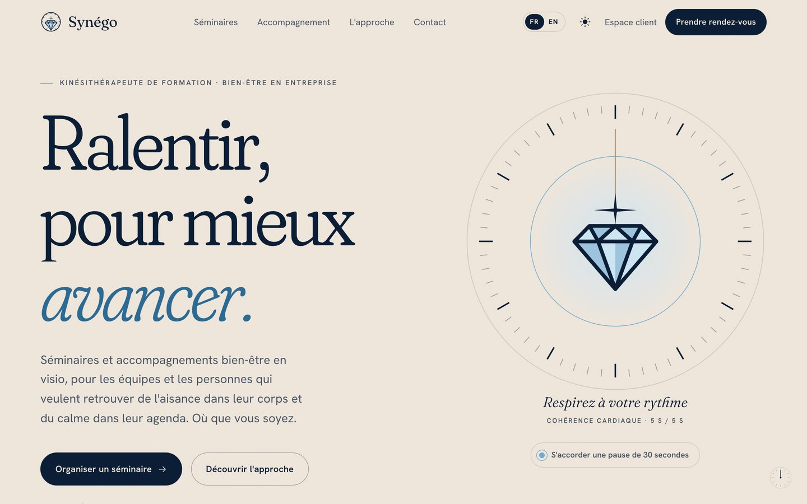
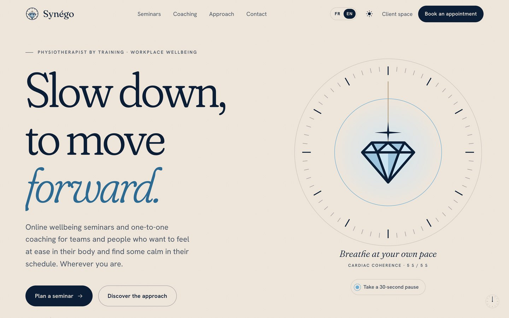
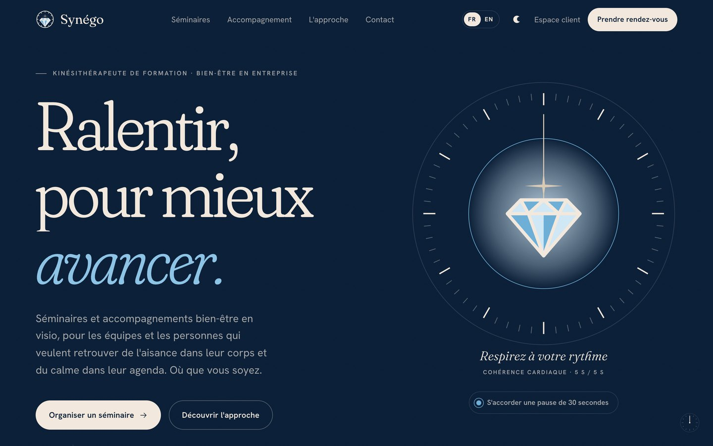
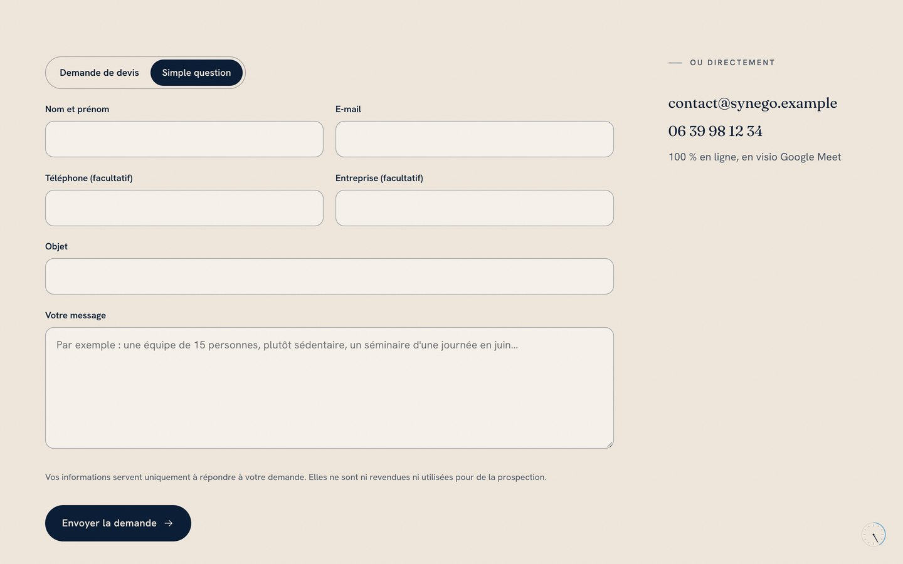
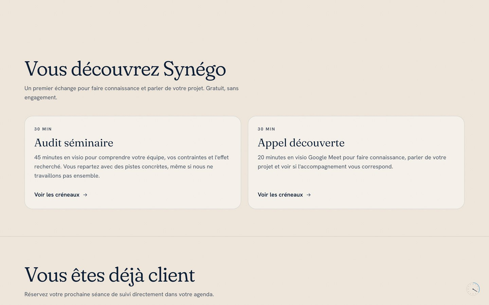
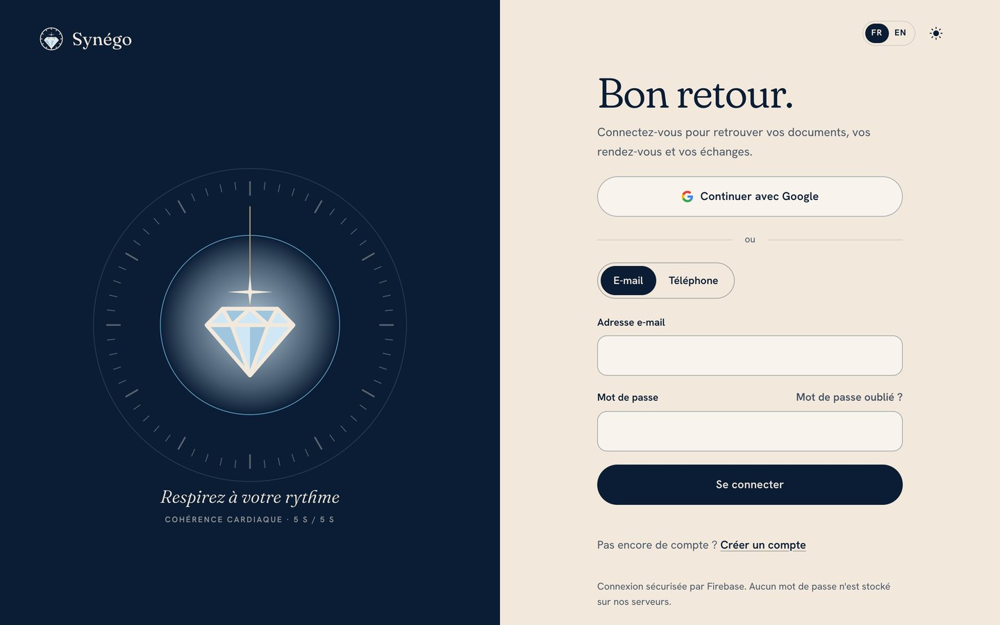
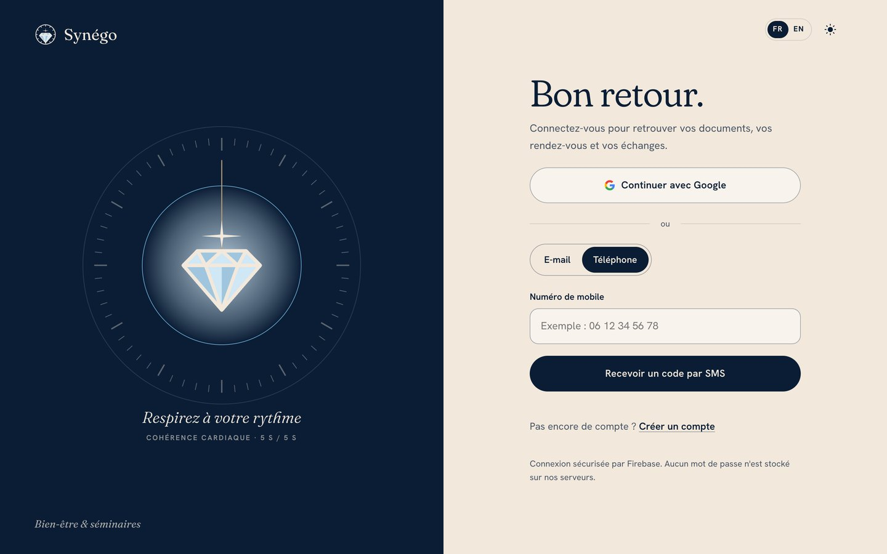
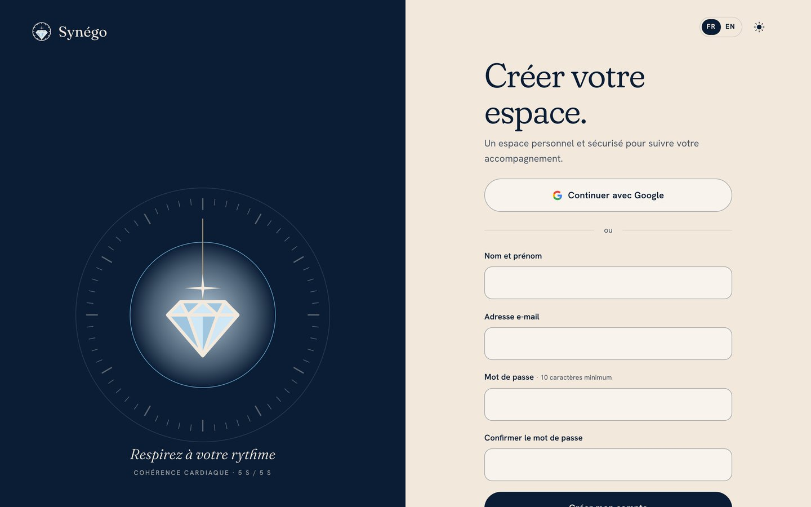
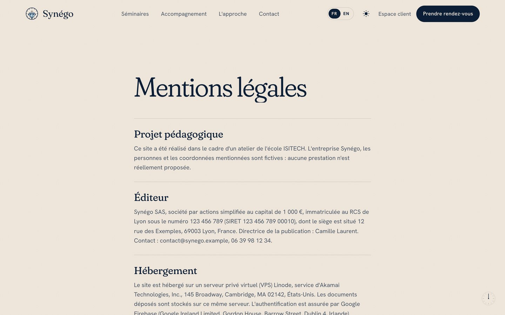

Guide d'utilisation
Tout ce qu'il faut savoir pour découvrir Synégo, prendre rendez-vous, utiliser son espace client et, pour la coach, gérer son activité depuis le back-office.
Synégo propose des séminaires et des accompagnements bien-être, 100 % en ligne, en visio Google Meet. Le site sert à la fois de vitrine, de prise de rendez-vous et d'espace privé pour les clients.
| Vous êtes… | Ce que vous pouvez faire | Où |
|---|---|---|
| Visiteur, prospect | Découvrir les séminaires et l'approche, demander un devis, réserver un audit séminaire ou un appel découverte. | Le site public |
| Client accompagné | Tout ce qui précède, plus : réserver vos séances de suivi, retrouver vos documents, suivre vos demandes, gérer vos rendez-vous. | Espace client /espace |
| Coach | Suivre la journée, gérer les clients, les rendez-vous et les demandes, prendre des notes, relier Calendly, nommer d'autres coachs. | Back-office /admin |

| Page | Contenu |
|---|---|
| Accueil | L'essentiel en un coup d'œil, les quatre gestes travaillés, les pistes pour démarrer. |
| Séminaires | Les formats pour les équipes, une journée type, les questions fréquentes ; chaque format mène à une proposition sur devis. |
| Accompagnement | Le suivi individuel, étape par étape, et ce que contient l'espace client. |
| L'approche | Qui est la coach, ce qui guide son travail. |
| Rendez-vous | La réservation en ligne (partie 04). |
| Contact | Le formulaire de devis ou de question (partie 03). |
Sur l'accueil, le cadran respire au rythme de la cohérence cardiaque (5 secondes d'inspiration, 5 secondes d'expiration). Le bouton « S'accorder une pause de 30 secondes » lance un court exercice guidé.


Le site retient votre choix pour vos prochaines visites. Par défaut, il suit la langue et le thème de votre appareil. Si votre système demande de réduire les animations, le site les coupe automatiquement.

Vous recevez une réponse personnalisée sous 48 heures ouvrées. Vos informations servent uniquement à répondre à votre demande : elles ne sont ni revendues ni utilisées pour de la prospection.
Écrivez plutôt depuis votre espace client, rubrique Demandes : la réponse arrive dans le même fil et vous retrouvez tout l'historique (partie 06).

| Rendez-vous | Pour qui | À quoi il sert |
|---|---|---|
| Audit séminaire | Entreprises | Comprendre votre équipe, vos contraintes et l'effet recherché ; vous repartez avec des pistes concrètes. |
| Appel découverte | Tout le monde | Faire connaissance, parler de votre projet, voir si l'accompagnement vous correspond. |
| Séance de suivi | Clients signés | Le rendez-vous régulier des clients accompagnés : faire le point, ajuster le programme. |
.ics
pour tout autre agenda. Sur Apple et Samsung, le fichier s'ouvre directement dans votre agenda.Connectez-vous d'abord. Tant que votre accompagnement n'a pas démarré, la séance reste verrouillée ; elle s'ouvre dès que la coach a enregistré votre signature.
Un rappel avec la date, l'heure et un bouton Annuler si vous ne pouvez plus venir.
Un rappel avec le lien Google Meet. À ce stade, l'annulation n'est plus possible.
Annulation ou déplacement possible jusqu'à 24 heures avant le rendez-vous : depuis le rappel de 48 heures, depuis l'e-mail de confirmation, ou depuis votre espace client (rubrique Rendez-vous). Moins de 24 heures avant, écrivez à la coach depuis la page Contact ou vos Demandes.


Cliquez sur Espace client en haut du site. Trois façons de se connecter, au choix :
| Méthode | Comment faire |
|---|---|
| « Continuer avec Google », puis choisissez votre compte. Le plus rapide : aucun mot de passe à retenir. | |
| Première fois : « Créer un compte », nom, e-mail et un mot de passe d'au moins 10 caractères. Un lien de confirmation arrive par e-mail : cliquez dessus, puis revenez sur le site et cliquez sur « J'ai confirmé ». | |
| Téléphone | Onglet « Téléphone », votre numéro de mobile (par exemple 06 12 34 56 78), « Recevoir un code par SMS », puis saisissez le code et « Valider ». Le compte est créé à la première connexion. |
Sur la page de connexion, « Mot de passe oublié ? », indiquez votre e-mail : un lien vous permet d'en choisir un nouveau. Synégo ne stocke aucun mot de passe : la connexion est gérée par Google Firebase.

Une fois connecté, l'Accueil de votre espace montre votre prochain rendez-vous, vos derniers documents et vos demandes en cours. Le menu mène aux rubriques ci-dessous ; « Retour au site » ramène à la vitrine, « Se déconnecter » ferme votre session.
Cet espace n'est pas prévu pour des données de santé : merci de ne pas y déposer d'ordonnance, de compte rendu médical ou d'examen.
Nouvelle demande : un objet, un message, « Envoyer ». La demande prend une référence et un statut : Envoyée, En cours quand la coach la traite, puis Close. Ouvrez-la pour lire les réponses et Répondre dans le même fil. Vos demandes de devis envoyées depuis le site y apparaissent aussi.
Réservé aux comptes Coach. On y accède par le lien Back-office du menu de l'espace, ou
directement à l'adresse /admin. Connexion avec la même méthode que d'habitude.
La page d'arrivée résume la journée en quatre compteurs cliquables :
| Compteur | Signification |
|---|---|
| RDV dans les 24 h | Les rendez-vous des prochaines 24 heures. |
| Demandes nouvelles | Les demandes pas encore lues ou traitées (mises en évidence s'il y en a). |
| Alertes rendez-vous | Les réservations à vérifier, par exemple une séance de suivi prise par une personne qui n'est pas cliente. |
| Nouveaux comptes (7 j) | Les personnes qui ont créé un compte cette semaine. |
Dessous : les Prochains rendez-vous et les Demandes à traiter ; des pastilles dans le menu signalent ce qui attend.
Règle pour les notes : pas de données de santé, uniquement le suivi bien-être (objectifs, exercices, ressentis).
Ouvrez une demande depuis la liste ou depuis « Demandes à traiter », répondez (la réponse apparaît dans l'espace du client), puis changez le statut : En cours pendant le traitement, Close une fois résolue.
Sur une offre Calendly payante, chaque réservation ou annulation arrive aussitôt (synchronisation instantanée). Sur l'offre gratuite, les réservations faites sur le site sont enregistrées ; le bouton Synchroniser maintenant récupère aussi celles prises ailleurs.
La durée affichée sur le site vient de Calendly. Réglez vos événements sur 45 minutes (audit), 20 minutes (appel découverte) et 60 minutes (séance de suivi), comme l'annoncent les textes du site.
Astuce : mettez la séance de suivi en événement secret dans Calendly. Son lien n'est alors donné qu'aux clients signés.
prenom.nom@exemple.fr) puis « Nommer coach ».
| Le problème | Que faire |
|---|---|
| Je ne reçois pas le SMS | Vérifiez le numéro (06…, ou +33 6…). Patientez une minute : le bouton « Renvoyer le code » se réactive. Les SMS sont envoyés en France et dans les pays francophones voisins. |
| « Le code a expiré » | Demandez-en un nouveau avec « Renvoyer le code ». |
| La fenêtre Google ne s'ouvre pas | Le navigateur a bloqué la fenêtre : autorisez les fenêtres pour ce site, puis recommencez. |
| Je ne reçois pas l'e-mail de confirmation ou de rappel | Regardez dans les indésirables. Depuis la page de vérification, « Renvoyer l'e-mail ». |
| « La connexion est momentanément indisponible » | Un réglage du site est en cours : réessayez plus tard ou écrivez via la page Contact. |
| Je ne peux plus annuler mon rendez-vous | Moins de 24 heures avant, l'annulation en ligne est fermée : prévenez la coach via vos Demandes ou la page Contact. |
| La séance de suivi est verrouillée | Elle est réservée aux clients signés : la coach doit enregistrer votre signature dans votre fiche. |
| Le site est bloqué au bureau ou à l'école | Certains réseaux filtrent ce type d'adresse (« Dynamic DNS »). Utilisez la 4G ou une autre connexion. |
| Mon espace affiche « momentanément indisponible » | Le service redémarre (par exemple pendant une mise à jour, environ une minute) : réessayez dans quelques minutes. |
Depuis le site : page Contact. Depuis votre espace : rubrique Demandes. Coordonnées (fictives, projet pédagogique) : contact@synego.example · 06 39 98 12 34.